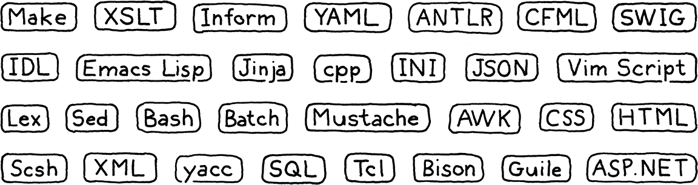

导言
童话比真实更真：不是因为它们告诉我们龙存在，而是因为它们告诉我们，龙是能被打败的。
G. K. 切斯特顿，转引自尼尔·盖曼《鬼妈妈》
我们就要一起走这趟了，我真是兴奋得不行。这是一本讲怎么实现编程语言解释器的书。它同时也是 一本讲怎么设计一门值得去实现的语言的书。它是我当年刚一头扎进语言领域时，希望手边能有的 那本书，也是我脑子里写了将近十年的那本书。
在这本书里，我们会一步步走过两个完整的解释器，为一门功能齐全的语言各造一个。我假定这是 你第一次闯进语言的领域，所以造一门完整、能用、够快的语言实现所需要的每一个概念、每一行 代码，我都会讲到。
为了在一本书里塞进两套完整实现，又不让它厚得能拿来挡门，这本书的理论比重比别家轻。我们每 搭起系统的一块，我都会交代它背后的历史脉络和相关概念。我会尽量让你把行话摸熟，这样万一 哪天你发现自己站在一屋子 PL（编程语言）研究者的鸡尾酒会上，也不至 于插不上话。
不过我们大半脑子，还是要花在把这门语言跑起来上。这并不是说理论不重要。做语言的时候，能 精确地、形式化地推理语法和语义，是一项至关重要的技能。但 就我个人而言，我最擅长的是动手学。让我趟过一整段一整段的抽象概念，真正把它们吃进肚里，这 事儿我做不来。可要是我亲手写过一段代码、跑起来、调试过，那我才算真懂了。
这就是我为你设定的目标。我希望你能带着一份扎实的直觉合上这本书：真实的语言是怎么活蹦乱跳 的。我希望的是，等你以后去读别的、更偏理论的书时，那里的概念能牢牢地刻在你脑子里，全都附着 在这个摸得着的底子上。
1 . 1为什么要学这玩意儿？
每本编译器书开头好像都躲不开这么一节。我始终想不明白，编程语言身上到底有什么，能让人怀疑 起「它到底该不该存在」来。不像鸟类学的书从不为这事操心——它们假定读者本来就爱鸟，张口 就教。
不过编程语言还是有点不一样。我想，我们当中任何一个人真能造出一门广泛成功的通用编程语言， 概率确实不大。全世界那些被广泛使用的语言，它们的设计者挤进一辆大众面包车都装得下——就算 不把折叠车顶撑开也一样。如果学语言的唯一理由是混进那个精英圈子，那这理由确实很难说圆。 还好，它不止这一个。
1 . 1 . 1小语言无处不在
每有一门成功的通用语言，就有一千门成功的小众语言。我们以前管它们叫「小语言」 （little languages），但术语经济这么一通胀，它们就换了个更长的名字：「领域特定语言」 （domain-specific languages）。这类语言像是为某个特定任务量身定做的皮钦语。想想应用脚本 语言、模板引擎、标记格式，还有配置文件。

几乎每个大型软件项目都需要几个这样的东西。能用现成的，就别自己造轮子。可一旦把文档、 调试器、编辑器支持、语法高亮，以及其他所有配套设施都算进来，自己动手造一门，要求可就太高 了。
但你多半还是会碰上这种事：现成的库都不合用，你不得不自己撸一个语法解析器或者别的工具。 就算你复用的是别人的实现，也迟早要去调试它、维护它、扒开它的内脏翻。
1 . 1 . 2语言是绝佳的练习
长跑选手有时会在脚踝上绑沙袋训练，或者到空气稀薄的高原去。等他们后来把这些负担卸下来， 四肢变轻、空气富氧，这份相对而言的轻松劲儿，就让他们能跑得更远、更快。
实现一门语言，是对编程功力的实打实的考验。代码复杂，而且性能是硬指标。你必须把递归、 动态数组、树、图和哈希表全都吃透。哈希表这种东西，你日常编程大概天天都在用，但你真的 懂它吗？等我们从零造一个出来之后，我保证你懂。
我打算让你看到，解释器并没有你想象的那么吓人，但要把一个实现好，依然是个挑战。迎上去干， 你会变成一个更强的程序员，在日常干活时用数据结构和算法也会更聪明。
1 . 1 . 3还有一个理由
最后这个理由我很难说出口，因为它离我心太近了。小时候刚学会写程序，我就觉得语言里有某种 魔法。第一次一个键一个键地敲出 BASIC 程序时，我根本无法想象 BASIC 自己是怎么造出来的。
后来我注意到了：我那些大学同学一谈起他们的编译器课，脸上那种敬畏与恐惧混杂的表情，就足以 让我相信：语言黑客是另一种人类——某种被特许研习秘术的巫师。
这个形象很迷人，但它有阴暗的一面。我并不觉得自己像个巫师， 于是只剩下一个念头：我身上缺少某种加入这个圈子所必需的天生资质。尽管从我在课本上涂鸦乱编 关键字开始，我就一直对语言着迷，但要鼓起勇气真正去学它们，我花了几十年。那种「魔法」的 特质、那种独占感，把我关在了门外。
等我真的开始七拼八凑地搭自己的小解释器时，我很快就明白了一件事：当然，根本没有什么魔法。 那就是代码，而玩语言的人，也就是普通人。
确实有那么几种在语言领域之外很少见的技术，有些地方也稍微有点难。但也不会比你自己已经 跨过去的其他障碍更难。我的希望是：如果你之前对着语言感到怵，而这本书帮你克服了那份畏惧， 那我走之前，至少能让你比来的时候勇敢那么一丁点儿。
而且，谁知道呢，说不定下一门伟大的语言就是你造出来的。总得有人来当这个人。
1 . 2本书是怎么组织的
这本书分成三部分。你现在读的是第一部分。几章的篇幅，用来给你定位、教一点语言黑客 说的行话，再把 Lox——也就是我们将要实现的那门语言——介绍给你。
另外两部分各造一个完整的 Lox 解释器。在这两部分里，每一章的结构都一样：挑一个语言特性， 把背后的概念讲给你听，然后带你走一遍它的实现。
我在这儿试错了相当久，才算把这两个解释器切成一章一章的块，每一块都建立在前几章之上， 却不需要后面任何一章的东西。从第一章开始，你手上就会有一个能跑、能玩的程序。每过完一章， 它就更功能齐全一点，到最后你就攒出一门完整的语言。
除了大量激动人心的英文散文之外，每一章还有几处让人愉快的花样：
1 . 2 . 1代码
我们马上要开始手雕解释器了，所以这本书里是真的有代码。需要的每一行代码都在里面， 每个代码片段还会告诉你要把它插进你那棵越长越大的实现的哪个位置。
很多别的语言书和语言实现会用到 Lex 和 Yacc 这类工具，也就是 所谓的编译器-编译器：它们能从一份更高层的描述里，自动生成实现中的某些源文件。这类工具 各有利弊，而利弊两边都有极其强烈的意见——有些人甚至说那是宗教信仰。
我们在这本书里戒掉它们。我不想留下任何阴暗角落，让魔法和困惑躲在里头，所以一切都手写。 正如你将看到的，这没那么可怕，而且这意味着你真的会理解每一行代码，以及两个解释器各自是怎么 工作的。
书里的约束跟「真实世界」不一样，所以这里的代码风格未必总是写出可维护的生产级软件的最好
路子。如果我看上去对省略 private、或者声明一个全局变量这类事情有点吊儿郎当，请理解，
我这么干是为了让代码看着不费眼睛。这里的版面没你的 IDE 那么宽，每一个字符都得算钱。
另外，代码里的注释不多。这是因为每几行代码周围，都围着好几段货真价实的散文在解释它。既然
你写书来给程序配解说，注释也就可以省了。不这么干的话，你大概应该比我多用一点 //。
书里包含了每一行代码，也讲清了每一行的意思，但它不讲要把解释器编译并运行起来所需的那套 机械功夫。我假定你能随手拼一个 Makefile，或者在你中意的 IDE 里建个项目，把代码跑起来。 那类说明很快就会过时，而我希望这本书像 XO 白兰地那样越陈越香，而不是后院私酿。
1 . 2 . 2代码片段
既然书里可是实打实包含了实现所需的每一行代码，代码片段就相当精确。另外，因为我尽量让程序 即便在缺了主要功能时也还能跑，有时候我们会加一些临时代码，等后面的片段再把它们替换掉。
一个把全套配件都装上的代码片段长这样：
default:
在 scanToken() 内
替换 1 行
if (isDigit(c)) {
number();
} else {
Lox.error(line, "Unexpected character.");
}
break;
中间是你要加进去的新代码。它上面或下面可能夹着几行淡掉的代码，用来告诉你它在现有代码里 该落在哪儿。旁边还有一小段说明，写着这个片段该放到哪个文件的什么位置。如果那段说明写的是 「替换 _ 行」，那就意味着中间那几行淡掉的代码之间夹着一段现有代码，你需要把它删掉，换成 这个新片段。
1 . 2 . 3旁注
旁注里放着人物小传、历史背景、相关话题的参考资料，还有另外一些值得 探索的方向的提示。为了读懂本书后面的内容，你并不需要掌握旁注里的任何东西，所以想跳过 就跳过。我不会评判你，不过我可能会有点难过。
1 . 2 . 4习题
每一章末尾都有几道练习。它们不像教科书的习题集——那种通常只是复习你已经学过的内容—— 这些题是为了让你学到比本章内容更多的东西。它们会把你从有人领路的路上推下来，逼你 自己去探索。你会去查别的语言、去琢磨某个特性怎么实现，或者总之被踢出自己的舒适区。
闯过这些习题，你会带走一份更宽的视野，也许还会蹭破几块皮。想窝 在游览车那圈舒适区里，那就跳过它们。这是你的书。
1 . 2 . 5设计说明
大多数「编程语言」书其实是地道的编程语言实现书。它们很少讨论，人该怎么设计一门被 实现的语言。实现之所以好玩，是因为它被精确地规定着。我们这些 程序员，似乎天生更亲近黑白分明的东西，更亲近一和零。
就我个人而言，我觉得这世界对 FORTRAN 77 的实现的需求，也就那么些。 某个时刻，你会开始设计一门新语言。一旦开始玩那个游戏，等式里更柔软、更人性化的 那一面就成了最要紧的：哪些特性容易学，怎么在创新和熟悉之间取平衡，什么语法对谁来说更好读。
这些东西会深刻影响你的新语言能不能成功。我希望你的语言能成功，所以在有些章节的末尾，我会 附一段「设计说明」，一小篇关于编程语言人性化一角的随笔。这方面我不是专家——我也不知道真有 谁是——所以读的时候请多加一大撮盐。这样吃起来才是更有味道的思想食粮，而这就是我的主要目的。
1 . 3第一个解释器
我们要用 Java 来写第一个解释器 jlox。重点放在概念上。我们会 尽可能用最简单、最干净的代码，正确地实现这门语言的语义。这样既能让我们对基本手法熟悉 起来，也能打磨我们对「这门语言到底该怎么表现」的理解。
Java 很适合干这事。它抽象层次够高，我们不会被琐碎的实现细节淹没，但又足够直白。不像脚本 语言那样，它底下藏着的机械东西通常没那么复杂，而且有静态类型帮你看清自己正在跟哪些数据 结构打交道。
我专门挑 Java，还有一个原因：它是一门面向对象的语言。九十年代这套范式横扫了编程界， 如今已是数百万程序员占主导地位的思考方式。你十有八九早就习惯把代码组织成类和方法，那就 让我们把你留在那个舒适区里。
学界搞语言的人有时看不起面向对象语言，但事实是，连语言工作本身也在广泛使用它们。GCC 和 LLVM 是用 C++ 写的，大多数 JavaScript 虚拟机也是。面向对象语言无处不在，而且为某门语言准备的 工具链和编译器，往往就是用这门语言自己写的。
最后，Java 火得一塌糊涂。这意味着你很可能已经会它了，进书要学的东西也就更少。要是你对 Java 还不够熟，别慌。我尽量只用它一个相当精简的子集。Java 7 的菱形运算符我用上了，好让 代码短一点，但所谓「高级」特性也就用到这儿。你要是会别的面向对象语言，比如 C# 或 C++， 也能凑合着往下走。
到第二部分结束时，我们会有一个简单、好读的实现。它不快，但它是正确的。不过，我们能做成 这样，靠的是站在 Java 虚拟机自己的运行时设施之上。我们想学的是，Java自己是怎么实现 这些东西的。
1 . 4第二个解释器
所以在下一部分，我们从头再来一遍，但这回用 C。要理解一个实现究竟是怎么运作的——一路 下到内存里的字节、下到流经 CPU 的代码——C 是最完美的语言。
我们用 C 的一个重要原因，是我可以向你展示 C 特别擅长的东西，但这确实意味着你得跟它 处得相当熟。你不必是丹尼斯·里奇的转世，但也不该被指针吓到。
要是还没到位，就挑一本 C 的入门书啃掉，啃完再回这儿来。作为回报，读完这本书你会成为一个 更强悍的 C 程序员。考虑到这么多语言实现都是用 C 写的——Lua、CPython，还有 Ruby 的 MRI， 随便举几个——这很划算。
在我们的 C 解释器 clox 里，Java 白送的那些东西，我们只能自己动手 实现。我们要自己写动态数组和哈希表，自己决定对象在内存里怎么表示，还要造一个垃圾回收器来 回收它们。
Java 那个实现专注的是正确。现在正确这件事做定了，我们转过来追求快。C 解释器里会装一个 把 Lox 翻译成高效字节码表示的编译器（别担心，那是什么意思我很快 就会讲），然后再去执行这个字节码。Lua、Python、Ruby、PHP 以及许多其他成功语言的实现，用的 都是同一个套路。
我们甚至还会动手做基准测试和优化。到最后，我们会为这门语言攒出一个稳健、准确、够快的 解释器，跟外面那些专业水准的实现掰手腕也不落下风。一本书加几千行代码，能做到这样，不赖吧。
习题
-
用来撰写并出版这本书的那套我七拼八凑搞出来的小系统，至少用到了六种领域特定 语言。它们是哪些？
-
用 Java 写一个「Hello, world!」程序并跑起来。配好让它能跑起来的 Makefile 或 IDE 工程。 如果手边有调试器，用熟了它，在你程序运行的时候单步跟一遍。
-
用 C 做同样的事。为了练练指针，定义一个由堆分配字符串组成的双向链表。写几个函数， 往里面插入、查找、删除元素。测一测它们。
设计说明：名字里能有什么？
写这本书最难的一件事之一，是给这门被实现的语言想个名字。我翻过了好几页候选名单，才 找到一个管用的。等你开始造自己的语言的第一天就会发现，起名字这件事难得出奇。一个好名字得 满足几个条件：
-
它没被占用。 一不小心踩了别人的名字，你会招来各式各样的麻烦，法律上的、社交上的 都有。
-
它好念。 要是事情顺利，会有大群大群的人念你语言的名字、写你语言的名字。任何超过 两个音节、或者超过几个字母的东西，都会让他们烦得要命。
-
它足够独特，搜得到。 人们会拿你语言的名字去搜资料，所以你得挑一个够冷僻的词，搜 出来的结果大部分才能指向你的文档。不过如今 AI 搜索引擎往结果里塞的东西太多，这一点也 没那么要紧了。可你要是把语言取名叫「for」，那对用户可没什么好处。
-
它在好几个文化里都没有贬义。 这很难提前提防，但值得想一想。「尼姆罗德」（Nimrod） 的设计者最后把语言改名叫「Nim」，因为太多人还记得《兔八哥》（Bugs Bunny）拿 「尼姆罗德」当骂人的话。（兔八哥那是在反讽。）
如果候选名字扛过了这轮考验，就留下它。别再纠结去找一个能概括你语言精髓的名字。如果世上 其他那些成功语言的名字能教给我们什么，那就是：名字其实没那么重要。你需要的不过是一个还 算独特的记号。